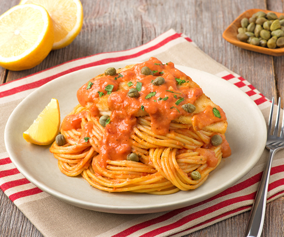

Chicken Piccata Milanese

Recipe
A classic pasta with a light, airy sauce with a bit of zest.
Ingredients
- 1 jar of Vodka Sauce
- 8 Chicken breasts, boneless and skinless
- 1/2 tsp. Salt
- 1/2 tsp. Ground Pepper
- 3/4 cup All-purpose flour
- 1/4 cup Olive oil
- 1 package Spaghetti pasta
- 2 tbsp Capers, drained and rinsed
- 2 tbsp Fresh parsley, finely chopped
- Lemon wedges
Steps
- Cook pasta according to package directions; drain well.
- Season chicken all over with salt and pepper. Coat each evenly in flour, shaking off excess.
Heat oil in a large nonstick skillet set over medium heat. Cook chicken, in batches, for 3 to 5
minutes per side or until browned and cooked through. Transfer to a plate and keep warm.
- Wipe skillet clean, and stir in pasta sauce; bring to a simmer. Toss some sauce with the Spaghetti
until coated. Serve chicken over spaghetti and top with remaining sauce. Garnish with capers
and parsley. Serve with lemon wedges.